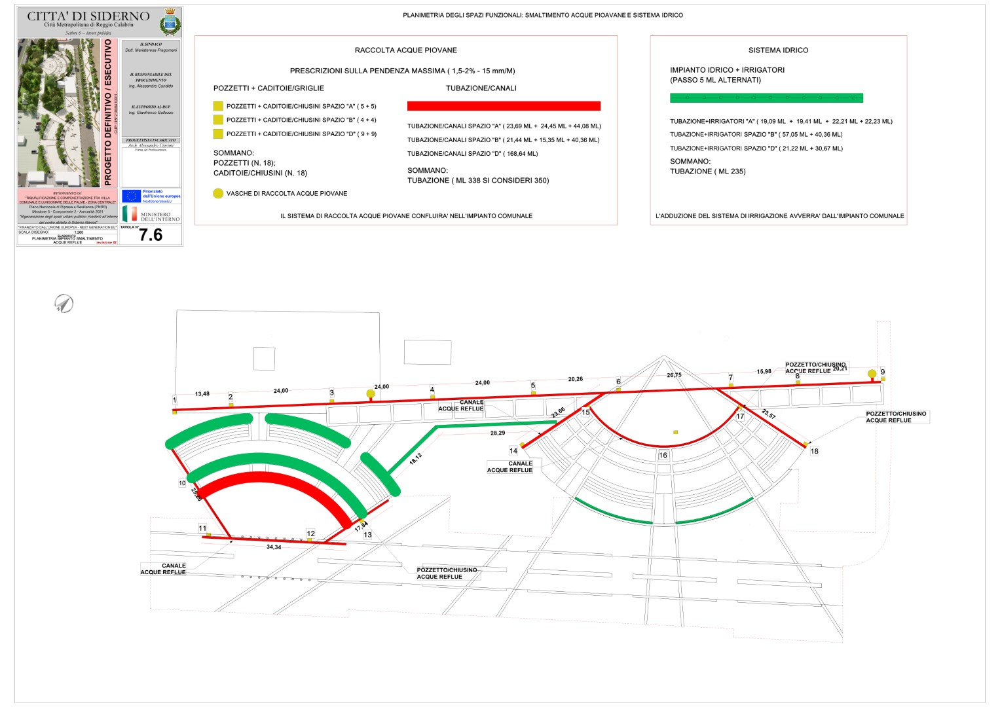

ASSEMBLEA PUBBLICA
Premessa
In questa pagine si riassume molto velocemente gli argomento affrontati durante l’evento tenutosi all’YMCA, purtroppo quel giorno non è stato possibile proiettare con sufficiente chiarezza tutte le schede per esporre il ragionamento dietro il quale il comitato “un sasso nello stagno” si è contrapposto al progetto d’iniziativa pubblica riguardo l’intervento di restauro della Villa Comunale di Siderno.
La premessa indissolubile
il finanziamento erogato dal PNRR prevede l’osservanza del principio DNSH, ovvero l’interdizione di danneggiare o indebolire ridurre le aree di verde pubbliche esistenti. La dichiarazione è ribadita a p. 43 della relazione tecnica allegata al progetto:
Il quadro normativo
Nella pagine seguente (p.44) sono invece richiamate le normative che devono essere rispettate dal progetto proposto:
Sobno state poi citati due articoli della legge 10:
Art. 6. Promozione di iniziative locali per lo sviluppo degli spazi verdi urbani;
Ai fini di cui alla presente legge, le regioni, le province e i comuni, ciascuno nell’ambito delle proprie competenze e delle risorse disponibili, promuovono l’incremento degli spazi verdi urbani, di «cinture verdi» intorno alle conurbazioni per delimitare gli spazi urbani, adottando misure per la formazione del personale e l’elaborazione di capitolati finalizzati alla migliore utilizzazione e manutenzione delle aree, e adottano misure volte a favorire il risparmio e l’efficienza energetica, l’assorbimento delle polveri sottili e a ridurre l’effetto «isola di calore estiva», favorendo al contempo una regolare raccolta delle acque piovane, con particolare riferimento:
- alle nuove edificazioni, tramite la riduzione dell’impatto edilizio e il rinverdimento dell’area oggetto di nuova edificazione o di una significativa ristrutturazione edilizia;
- agli edifici esistenti, tramite l’incremento, la conservazione e la tutela del patrimonio arboreo esistente nelle aree scoperte di pertinenza di tali edifici;
- alle coperture a verde, di cui all’articolo 2, comma 5, del regolamento di cui al d.P.R. 2 aprile 2009, n. 59, quali strutture dell’involucro edilizio atte a produrre risparmio energetico, al fine di favorire, per quanto possibile, la trasformazione dei lastrici solari in giardini pensili;
- al rinverdimento delle pareti degli edifici, sia tramite il rinverdimento verticale che tramite tecniche di verde pensile verticale;
- alla previsione e alla realizzazione di grandi aree verdi pubbliche nell’ambito della pianificazione urbanistica, con particolare riferimento alle zone a maggior densità edilizia;
- alla previsione di capitolati per le opere a verde che prevedano l’obbligo delle necessarie infrastrutture di servizio di irrigazione e drenaggio e specifiche schede tecniche sulle essenze vegetali;
- alla creazione di percorsi formativi per il personale addetto alla manutenzione del verde, anche in collaborazione con le università, e alla sensibilizzazione della cittadinanza alla cultura del verde attraverso i canali di comunicazione e di informazione.
Ai fini del risparmio del suolo e della salvaguardia delle aree comunali non urbanizzate, i comuni possono:
- prevedere particolari misure di vantaggio volte a favorire il riuso e la riorganizzazione degli insediamenti residenziali e produttivi esistenti, rispetto alla concessione di aree non urbanizzate ai fini dei suddetti insediamenti;
- prevedere opportuni strumenti e interventi per la conservazione e il ripristino del paesaggio rurale o forestale non urbanizzato di competenza dell’amministrazione comunale.
Le modalità di attuazione delle disposizioni di cui al comma 2 sono definite d’intesa con la Conferenza unificata di cui all’articolo 8 del decreto legislativo 28 agosto 1997, n. 281, e successive modificazioni.
I comuni e le province, in base a sistemi di contabilità ambientale, da definire previe intese con le regioni, danno annualmente conto, nei rispettivi siti internet, del contenimento o della riduzione delle aree urbanizzate e dell’acquisizione e sistemazione delle aree destinate a verde pubblico dalla strumentazione urbanistica vigente.
Art. 7. Disposizioni per la tutela e la salvaguardia degli alberi monumentali, dei boschi vetusti, dei filari e delle alberate di particolare pregio paesaggistico, naturalistico, monumentale, storico e culturale
(articolo così modificato dall’art. 16, comma 1, del d.lgs. n. 34 del 2018)
Agli effetti della presente legge e di ogni altra normativa in vigore nel territorio della Repubblica, per «albero monumentale» si intendono:
- l’albero ad alto fusto isolato o facente parte di formazioni boschive naturali o artificiali ovunque ubicate ovvero l’albero secolare tipico, che possono essere considerati come rari esempi di maestosità e longevità, per età o dimensioni, o di particolare pregio naturalistico, per rarità botanica e peculiarità della specie, ovvero che recano un preciso riferimento ad eventi o memorie rilevanti dal punto di vista storico, culturale, documentario o delle tradizioni locali;
- i filari e le alberate di particolare pregio paesaggistico, monumentale, storico e culturale, ivi compresi quelli inseriti nei centri urbani;
- gli alberi ad alto fusto inseriti in particolari complessi architettonici di importanza storica e culturale, quali ad esempio ville, monasteri, chiese, orti botanici e residenze storiche private.
1-bis Sono considerati boschi vetusti le formazioni boschive naturali o artificiali ovunque ubicate che per età, forme o dimensioni, ovvero per ragioni storiche, letterarie, toponomastiche o paesaggistiche, culturali e spirituali presentino caratteri di preminente interesse, tali da richiedere il riconoscimento ad una speciale azione di conservazione.
Con decreto del Ministro delle politiche agricole alimentari e forestali, di concerto con il Ministro dei beni e delle attività culturali e del turismo ed il Ministro dell’ambiente e della tutela del territorio e del mare, sentita la Conferenza unificata di cui all’articolo 8 del decreto legislativo 28 agosto 1997, n. 281, sono stabiliti i principi e i criteri direttivi per il censimento degli alberi monumentali e dei boschi vetusti ad opera dei comuni e per la redazione ed il periodico aggiornamento da parte delle regioni e dei comuni degli elenchi di cui al comma 3, ed e’ istituito l’elenco degli alberi monumentali e dei boschi vetusti d’Italia alla cui gestione provvede il Ministero delle politiche agricole alimentari e forestali. Dell’avvenuto inserimento di un albero nell’elenco e’ data pubblicità mediante l’albo pretorio, con la specificazione della località nella quale esso sorge, affinché chiunque vi abbia interesse possa ricorrere avverso l’inserimento. L’elenco degli alberi monumentali e dei boschi vetusti d’Italia e’ aggiornato periodicamente ed è messo a disposizione, tramite sito internet, delle amministrazioni pubbliche e della collettività.
Le regioni recepiscono le definizioni di albero monumentale di cui al comma 1 e di boschi vetusti di cui al comma 1-bis, effettuano la raccolta dei dati risultanti dal censimento operato dai comuni e, sulla base degli elenchi comunali, redigono gli elenchi regionali e li trasmettono al Ministero delle politiche agricole alimentari e forestali. L’inottemperanza o la persistente inerzia delle regioni comporta, previa diffida ad adempiere entro un determinato termine, l’attivazione dei poteri sostitutivi da parte del Ministero delle politiche agricole alimentari e forestali.
Salvo che il fatto costituisca reato, per l’abbattimento o il danneggiamento di alberi monumentali si applica la sanzione amministrativa del pagamento di una somma da euro 5.000 a euro 100.000. Sono fatti salvi gli abbattimenti, le modifiche della chioma e dell’apparato radicale effettuati per casi motivati e improcrastinabili, dietro specifica autorizzazione comunale, previo parere obbligatorio e vincolante del Corpo forestale dello Stato.
Per l’attuazione del presente articolo è autorizzata la spesa di 2 milioni di euro per l’anno 2013 e di 1 milione di euro per l’anno 2014. Al relativo onere si provvede mediante corrispondente riduzione della dotazione del Fondo per interventi strutturali di politica economica, di cui all’articolo 10, comma 5, del decreto-legge 29 novembre 2004, n. 282, convertito, con modificazioni, dalla legge 27 dicembre 2004, n. 307.
Le linee guida per la gestione del verde urbano
sono poi state rapidamente sorvolate le linee guida per la gestione del verde urbano
Esamina del progetto
Stabiliti il contesto normativo si è potuto passare all’esamina del progetto. Analizzando l’estensione delle superficie pavimentate proposte sovra impresse su la foto satellitare del sito in questione:
Individuandone le aree di destinazione previste dal progetto;

Quantificate l’estensione delle dette aree;

Si possono alla fine esporre il bilancio delle aree vegetali e di quelle pavimentate previste dalle tavole allegate al progetto. Come si puo leggere la superficie vegetale è in netta diminuzione. Solo questo dato contrasta inequivocabilmente il principio DNSH accennato all’inizio.

Oltre tutto, si è anche data una rappresentazione delle alberatura in sede progettuale poco fedele alla realtà del luogo, le chiome sono troppo esigue e molto piu numerose di quanto riscontrabile in sito:

Si è quindi riproposta una planimetria più congrua, sopratutto riguardo la volumetria occupata dalle chiome esistenti.

La percezione che si ottiene è molto diversa, alla sensazione di moltitudine iniziale si soppianta quella di scarsità. Ora si puo capire che alcune persone trovino accessorie le rappresentazioni grafiche, ma per il progettista è uno strumento indispensabile per potere rappresentarsi lo spazio e proporre trasformazioni valide. Come si puo avvalorare una proposta quando alcuni passaggi sono decisamente conclamati fuorvianti.
L’ecosistema
Si è poi colto l’occasione per spiegare cos’è e come funziona un ecosistema. L’intervento su un tale ambiente va ben oltre la modifica dei suoi singoli elementi che lo compongono. All’interno dello spazio che i cittadini chiamano “villa comunale” si celano tanti habitat interdipendenti che si sovrappongono e s’intrecciano in modi cosi complessi che sfuggono all’osservazione dei non adepti ai lavori. Canopea e rizosfera per citarne le più importanti non vengono neanche menzionate all’interno delle varie relazione specialistiche che accompagnano il progetto. Si leggono tante pagine sulle parti elettriche, dimensioni dei cavi, resistenza ed impedenza dei vari componenti elettrici, medesima cosa dell’impianto idrico o quello di sorveglianza, ma sul soggetto principale d’intervento: il biotopo … il nulla, il vuoto piu totale!
Ed in perfetto contrasto ancora una volta con tutto quanto appena spiegato, si evidenzia come, a p.18 delle relazione tecnica, fosse prevista, in una fase sicuramente embrionale precedente del progetto, addirittura l’installazione di un manufatto coperto proprio sotto le chiome dei alberi monumentali. Sicuramente in quel attimo l’integrità ambientale del sito non faceva parte delle priorità del progettista:
La fotografia seguente illustra bene la difficoltà obiettiva cantieristica a collocare anche un gazebo fruibile da persone adulte statisticamente normali riguardo le altezze medie di ognuno:
Il Vespaio Areato
Nelle slide successive erano poi illustrate l’inutilità di prevedere un vespaio areato che ricoprisse la zona delle radici affiorante degli alberi monumentali, in fatti l’installazione a regola d’arte prevede quel tipo di preparazione:
L’inserimento di questi pali all’interno dell’apparato radicale rappresenta un rischio ben maggiore di dannegiarlo che la garanzia di protezione prevista.
L’intrusione dell’impianto elettrico
Alla stessa stregua andrebbe ripensato l’impianto elettrico nei pressi delle radici degli alberi monumentali, che potrebbero danneggiarli nella posa degli stessi senza contare l’effetto a lungo termine dei campi elettromagnetici sugli scambi molecolari in atto nel terreno. Spesso la progettazione seria di giardini prevede l’utilizzo di pali luminosi equipaggiati di panelli solare per evitare l’installazione di cavi ingombranti nel sottosuolo.

Infiltrazione dell’impianto idrico
Si è trattato anche dell’impianto d’irrigazione, evidenziando che il dimensionamento del recupero delle acque piovane è insufficiente perché calibrato esclusivamente sulle precipitazione estive invece di quelle piu abbondante dei mesi più piovosi:

Oltre questo il nuovo sistema d’irrigazione è previsto solamente per le palme washingtonia coloro che notoriamente necessitano di meno di apporto di aqua. Sono le specie preferite dalle amministrazioni che non intendono addossarsi spese di manutenzione/irrigazione contingenti.

La mappatura delle inquadrature delle fotografie prese durante il rilievo mostra come la fascia compresa tra la ferrovia e il vialetto non è stato neanche repertoriato. Come puo l’intervento circostante prendersi cura della zona antica se non è stata neanche esaminata con la stessa cura ?
Protagoniste, le Tribune
Giungiamo al pezzo di maggiore criticità, le tribune, la sezione del manufatto non lascia margine d’interpretazione possibile, assomiglia definitivamente alle sezioni dei muri a gravita di gabbionate adoperate per il contenimento delle scarpate lungo le strade di percorrenza. Solo che a ridosso non è presente nessun terreno da contenere. Di solito si deve scegliere tra l’economicità dei gabbioni controbilanciata dal loro ingombro notevole oppure il sovrapprezzo del cemento armato che offre un ingombro molto ridotto. Qui è stato realizzato l’ibridazione piu sfavorevole unendo il costo del cemento armato all’ingombro delle gabbionate.

Sottovalutando che la altezze raggiunte dei gradini possono determinare rischi di caduta per gli utenti non indifferenti


Ecco per esempio una tribuna utilizzata all’interno di una scuola, si nota come è stata prevista una recinzione di protezione anche nelle scalinate piu basse

Non serve andare molto lontano per vedere esempi di efficacia sobrietà su siti storicamente molto piu pubblicizzati come l’antico teatro di Trapani.

Finalmente si è toccato l’argomento delicato delle spese previste, è stato preparato un diagramma dove sono illustrate le ripartizione delle spese previste. Le spese delle opere riguardante il verde urbano e la sua attrezzatura non supera il 10 %, tutto il resto è assorbito dell’artificializzazione del sito.
Le Voci di Spese

Impostazione che sorprende dato la classificazione prevista dalla scheda identificativa dell’erogazione del finanziamento:

Le Proposte di Variante
E’ stato chiesto alla fine se potrebbero essere accettate proposte di variante, il comitato ha riportato che l’amministrazione ha da subito affermato che non potevano essere accolte in nessun caso proposte di variante considerate le difficoltà passate ad ottenere i vari consensi ed autorizzazione durante le conferenze dei servizi. Considerato che sia la normativa delle opere pubbliche che il contratto di appalto prevedono la gestione delle varianti, abbiamo inteso che l’affermazione della P.A. Comunale aveva come intento di limitare l’importanza e l’entità delle eventuali variante.